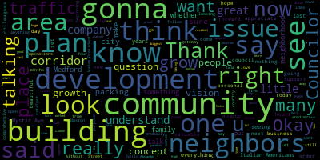
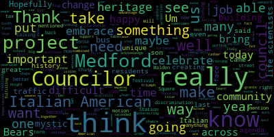
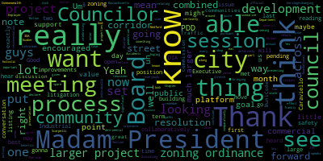

[Morell]: 19th regular meeting of the Medford City Council is October 3rd, 2023 is called to order. Mr. Clerk, please call the roll.
[Hurtubise]: Mr. President, please rise to salute the flag.
[Morell]: Announcements, accolades, remembrances, reports, and records. 23-422, offered by Councilor Caraviello, be it so resolved that the Medford City Council send its deepest and sincere consolences to the family of Medford firefighter, George Cataldo, on his recent passing. George served with Medford Fire Department for 38 years prior to his retirement. His presence in our community will be missed. Councilor Caraviello.
[Caraviello]: Thank you, Madam President. Firefighter Cataldo is someone I've known since elementary school. George was a... A small guy, but very, very tall in stature in his department. And it's a shame he just retired a couple of years ago and he had an illness and he passed away. So just I want to send condolences to George's family on his passing at present.
[Morell]: Thank you, Councilor Caraviello. On the motion of Councilor Caraviello, seconded by Councilor Scarpelli. All those in favor? All those opposed? Motion passes. Please rise for a moment of silence. 23-423 offered by Councilor Caraviello. Be it resolved that the Medford City Council congratulate Dave McGillivray on the second run Medford race. Over 700 runners participated in this two-day event and a donation was made to the Medford Recreational Department. We look forward to this event growing next year. Councilor Caraviello.
[Caraviello]: Thank you, Madam President. I want to thank Dave and all the staff that put on another great road race for the city. We had an event that was a two-day event. Councilor Caravelle did not run this year, even though I wanted to, but Dave said they wanted to get the Friday event done before dark. And then there was another guy there that ran, who I ran with last year. As you know, Rick finished last, last year. And the guy that I ran with said, how come you're not running this year? I said, I just can't do this. He says, now I'm going to have to finish last. But it was a great event on both days. And just want to thank Dave and all the staff for bringing the race to the city. And hopefully next year it'll go to 1,000 people.
[Morell]: Thank you, Councilor Caraviello. On the motion of Councilor Caraviello, seconded by Councilor Scarpelli. All those in favor? All those opposed? Motion passes. 23-424, offered by Councilor Caraviello and Councilor Scarpelli. Be it so resolved that the Medford City Council acknowledge Italian American Heritage Month in the city of Medford as proclaimed by President Barack Obama in 2010, by recognizing the contributions and achievements of Italian Americans. Over 26 million Americans of Italian descent currently reside in the United States, making up America's seventh largest ethnic group.
[Caraviello]: Thank you, Madam President. I just want to acknowledge that this Italian heritage month in the country as proclaimed by the president, and I would like to proclaim something for all the Italians in Metro. There's still a lot of, you know, still a lot of Italians still living in this city, and I would like to see something done by the city to recognize him. We've done flag raising for every nationality that's had a day. I haven't seen anything proposed by the city to acknowledge the Italian Americans in Method. So I would hope the administration would offer a flag raising day or something to acknowledge the Italian Americans living in the city of Medford.
[Morell]: Thank you, Councilor Caraviello. Councilor Scarpellillo.
[Scarpelli]: Thank you. As a first-generation U.S. resident and Method resident, I was born to Italian-born parents who grew up in northern Italy in two little towns in Calabria. And they came to this country, the greatest country in the world, to make something of themselves and for their families and start the legacy that they would be proud of. They came to this community and they loved Medford and appreciate Councilor Knight, excuse me, Councilor Caraviello for speaking earlier, but you have to understand there's still so many Italian Americans in Medford that were raised like me and have parents like mine and the sacrifices they made and to be just part of that that history and that pride of being an American citizen. It's funny, my dad, while my mother raised, well, she parented four children on her own, while my dad worked as a member of Revere Sugar, he worked at a meat packing company and at glass cutting. company while going to Don Bosco High School to learn English because, as he said it, it was his honor to learn the language of the great country he moved to. And I think that stands for a lot of Italian-Americans, proud Italian-Americans that live in Medford today. And just to acknowledge that fact that this is a good time to mention what they've done to make Medford what it is today, whether it's the arts, whether it's education, whether it's, you know, in the, you know, the political field. We have Italian Americans, greatness all over this community. So I appreciate is bringing this forward and acknowledging this this time for the Italian Americans of metric. So thank you.
[Tseng]: Thank you. Thank you, Councilor Caravallo and Councilor Scarcelli for putting this on the agenda. It's also really great to get two Italian Americans to be able to put this on the agenda. I said this last year, but one of the most interesting experiences for me going to college was that I realized that not everyone had the chance to learn Italian in school. Yeah, unfortunate. And we're really fortunate to have that in Medford. And I do think that makes us really unique and our history really unique. And I, you know, I think there's so many ways, as a son of immigrants, I know how important it is to celebrate your heritage. And there's so many ways to celebrate Italian American heritage here that we really can do more to embrace that. I know Councilor Knight has said time and time again, creating a zone in South Medford where we can capture that heritage and maybe even take advantage of state grants and funds for that. When I went to San Diego, There's the little Italy over there does a great job in terms of honoring its Italian American residents, there's such a rich history there so many so much work that telling Americans have put into shape our community. The way it is today and. And I think this is something that came across a few years ago when this was a hot button issue. I think we really need to do more to acknowledge the fact that it was a really difficult time for Italian-Americans who came here. They did face a lot of discrimination. And I think we can do more to celebrate the triumph of Italian-Americans and face that discrimination as well. And so I'd be very happy to support, you know, a flag raising or some ceremony festival here. I'm really happy to see that we were able to get the Italian festival here in Medford this year. And, you know, I think this is one of the ways that we can bring our community back together.
[Morell]: Thank you, Councilor Tseng. Vice Mayor Farris.
[Bears]: Thank you, Madam President. Thank you to my fellow Councilors for putting this resolution on. I definitely agree that celebrating you know, Italian American heritage in the city is so important. I like to think that we try to, each of us individually, maybe do it every day. That might just be me in where I shop and what I eat. But, you know, it's not just those little things. I think having something official is of value to everybody as well. So I would certainly support that. I just want to note that I'm on a collaboratively kick. And thank you, Councilor Scarpelli for bringing up collaboratively. Yeah, it's the best. It's the best.
[Morell]: Thank you. Going to Mr. Kasich now. Good evening, councilors.
[Caraviello]: I want to say hallelujah, especially for Christophero Colombo. Good night.
[Morell]: Thank you. Thank you, Mr. Castagnetti. So, on the motion of Councilor Caraviello, seconded by Councilor Scarpelli. All those in favor? All those opposed? Motion passes. Everyone spoke in favor of it, so I'll take it. 23-425, offered by Councilor Caraviello. Be it so resolved that the Medford City Council send its deepest and sincere condolences to the family of Judith Collusion, wife of longtime Medford businessperson Paul Collusion of Alexander's. Her presence in our community will be dearly missed. Councilor Caraviello.
[Caraviello]: Thank you, Madam President. Those of you who are familiar with the South Medford area, Alexander's Food Store has been a longstanding institution there for many years. And Paul and Judy are both owners of that store that continued there, and probably two of the finest people you ever want to meet. And Judy passed away this week after a life he gave us. So I would just like to send condolences to her family. that's what we're going to do.
[Morell]: And we're going to do our best on the best. Thank you. Council probably all I can.
[Scarpelli]: Thank you. Council cover will bring this forward. I know that again a great method family when you talk about, um. Our friends at Alexander's again. Another another small business that is quick to this death does hit South Medford hard, and the family of Alexander's just doesn't, it spreads throughout our community, so condolences to the family. Thank you, Councilor.
[Morell]: Thank you, Councilor Scarpelli. So on the motion of Councilor Caraviello, seconded by Councilor Scarpelli. All those in favor?
[Hurtubise]: Aye.
[Morell]: All those opposed? Motion passes. Please rise for a moment of silence.
[Caraviello]: Madam President, if we could take paper 23426 and 23424 out of order. I'm sorry, did you mean 23434? 426 and 434. Yes. Out of order. On the motion of Councilor Caraviello to take 23426 and 23434 out of order, second by Vice President Bears.
[Morell]: All those in favor? Aye. Opposed? Motion passes. petitions, presentations, and similar papers. 23-426, petition for a common Mitchell's license by Kayla Ribeiro for Bocelli's Restaurant, 374 Main Street, Medford Mass, 02155. On file, business certificate number 186. I will hand it over to Councilor Scarpelli, chair of the licensing subcommittee. And then do we also have a rep from Bocelli's either on the line or you could come up to the mic and I'll hand it over to Councilor Scarpelli.
[Scarpelli]: Hi, Ms. Ribeiro, how are you? Now, this is a transfer?
[3gvhm0AovZU_SPEAKER_43]: Correct.
[Scarpelli]: It's going over to, you're taking over?
[3gvhm0AovZU_SPEAKER_43]: Correct.
[Scarpelli]: From the Catracalla family?
[3gvhm0AovZU_SPEAKER_43]: Yes.
[Scarpelli]: And this is good news because there was a big question in that community, that neighborhood that we hope it was staying. So this is great news. If you could just tell us a little bit about your concept and what we're doing.
[SPEAKER_08]: So we're keeping everything as is. Nothing is going to change. We have the same staff. Same. We're not going to change anything. People are very worried that I was born in Brazil. They're like, you're going to put Brazilian food. I'm like, no, I have Italian grandparents. So we're going to keep everything as is.
[Scarpelli]: That's great news. So I see everything is in order. I think that, I know that, are you familiar with the hours of operations?
[3gvhm0AovZU_SPEAKER_43]: Yes.
[Scarpelli]: And any, you realize that hours of operations that was granted to Bocelli's has to stop with them? Yeah. And then any extended hours, you have to come back for a special permit? Yes. Okay, so I know my fellow colleagues have a question. I see everything in order to move forward, Madam President.
[Morell]: Thank you, Councilor Falco. Any questions from the council? So on the motion of Councilor Scarpelli to approve, seconded by Councilor Caraviello. All those in favor?
[Hurtubise]: Aye.
[Morell]: All those opposed? Motion passes.
[Hurtubise]: Congrats.
[Morell]: Great luck. Thank you. Yeah. 23-434, petition for common business license by Ralph Mascalco, Lucy's Craft Deli and Rotisserie, 472 High Street, Medford, Mass, 02155, on file versus certificate 092. Do you want to come up to the mic? And again, I will hand it over to Councilor Scarpelli to start us off.
[Scarpelli]: Hi, how are you? So a new business and on High Street. This is very exciting, especially when you see said to me, what is it? Mr. Maniscalco?
[SPEAKER_09]: Yes, Rudy.
[Scarpelli]: Rudy. Okay. So why don't you give us a description of what we're going to do?
[SPEAKER_09]: Handcrafted sandwiches, things that usually don't see in certain places. Like I'll do a Reuben, Cuban sandwich, a meatloaf sandwich. We're doing a weekly thing. We're gonna do Sicilian pizza by the slice, some salads. Very simple, but very well done.
[Scarpelli]: Okay, I can only imagine. So this looks, I mean, everything is in order. Your hours of operations, if you could just share with that.
[SPEAKER_09]: At the beginning, probably 11 to four. I'd like to maybe do a little bit later on the weekends. Okay. I'm gonna see how it goes first, and then eventually do some breakfast sandwiches too.
[Scarpelli]: Okay. All right, Madam President, I also see everything in order. Move approval. My colleagues have any questions?
[Morell]: Any questions, Councilor Caraviello?
[Caraviello]: Thank you, Madam President. I got to meet this fine gentleman a few weeks ago. He helped me, the foodie that I am. Of course, I had the questions. No. For those of you who don't know, he has a restaurant in Arlington also. Yes. And he's going to be coming over here, and I think it's a great addition to West Summit Square, and I welcome you to the community. Thank you, thank you, thank you all.
[Morell]: Thank you, Councilor Caraviello. And as someone, I live just down the street, so I'm very curious, what's the restaurant in Arlington? So I'm like, I know what to expect.
[SPEAKER_09]: I'm sorry.
[Morell]: What's your other restaurant? Just out of curiosity.
[SPEAKER_09]: Oh, let's do go. Kuchina. It's in Arlington. I mess up. It's about a mile and a half away from where Lucy's is going to be great.
[Morell]: Yeah, I live just on the street from in West Bedford, so I'm very Yeah, I also live a place that wrote. Oh, great. I'm sure I see you. So on the motion of Councilor Scarpelli, seconded by Councilor Caravielloa, all those in favor. All those opposed. Motion passes.
[3gvhm0AovZU_SPEAKER_43]: Thank you.
[Hurtubise]: Absolutely. Absolutely not. We'll be there.
[Morell]: Before we revert to regular order, can we take 23-433 out of order? 23-433. Yes, Madam President, I would make a motion.
[Tseng]: Well, I'll make that motion after it's taken up.
[Morell]: Okay.
[Tseng]: On the motion of Councilor Tseng to take 23-433 out of order, seconded by... Second.
[Morell]: Councilor Scarpelli, all those in favor? All those opposed? Motion passes. 23-433, via electronic delivery to President and members of the Medford City Council regarding Commonwealth of Massachusetts DIA Board Number 1198922, dear President Morell and members of the City Council, I respectfully request and recommend your honorable body enter executive session pursuant to General Law Chapter 30A, Section 21A.3. to discuss strategy with respect to litigation concerns in case of Commonwealth of Massachusetts, Department of Industrial Accidents, Employer, City of Medford, DIA board number 11989-22. I also recommend that the city council's agenda state in the executive session notice that votes may be taken. HR director Lisa Crowley and claims specialist Sharon Thomas of USI slash Future Comp will be present to provide the council with guidance on this matter. Thank you for your kind attention to this matter. Sincerely, Breanna Lungo-Koehn, Mayor. I assume you have a motion to make before I continue reading?
[Bears]: Yes, Madam President. I move to enter Executive Session pursuant to General Law Chapter 30A, Section 21A.3 to discuss strategy relating to pending litigation known as Commonwealth of Massachusetts DIA, Department of Industrial Accidents Case, City of Medford Employer, DIA Board Number 11989-22. Because I declare that discussing the matter in open session may have detrimental effect on the litigation position of the city, and with the council to return to open session, and also votes may be taken during the executive session.
[Morell]: Thank you. So on the motion of Vice President Bears, seconded by Councilor Caraviello, Mr. Clerk, please call the roll.
[Hurtubise]: Vice President Bears. Yes. Councilor Caraviello. Yes. Councilor Collins. Yes. Councilor Scarpello. Yes. Councilor Tseng? President Bears?. Yes.
[Morell]: Yes, six in the affirmative, zero in the negative, one absent. We will move into executive session. We will physically go into 207, and Ms. Thomas, I will take you with us in a breakout room, so we'll pull you in there. Regular sessions. Hearings 2383, legal notice of a public hearing. Medford City Council, chapter 94, zoning. The Medford City Council will conduct a public hearing on October 3, 2023 at 7 PM in the Medford City Council chambers on the second floor of Medford City Hall. 85 George B. Hassett Drive, Medford, Mass. and via Zoom relative to paper 23-383, a petition by 243 Mystic App LLC and 45 West 3rd Street, Boston, Mass. 02127 to amend a zoning map City of Medford, Mass. dated April 13, 1965, as referenced in Medford Zoning Ordinance Chapter 94-2.2. The amendment proposes to change the zoning district designation of the property 243 Mystic Avenue as depicted on the plan entitled site layout plan dated June 15th, 2023 from commercial to C2 zoning district to a planned development district PDD, which would have new development standards per Medford zoning ordinance chapter 94-9.2.3. A Zoom link to the public hearing will be posted no later than September 29th, 2023. For the city council public hearing call 781-393-2425 for accommodations aids slash TDD 781-393-2516. The full materials for the amendment can be viewed in the Office of City Clerk, City Hall, Room 103, or on the city's website at medfordmad.org slash department slash planning dash development dash sustainability by clicking on current CD board filings. By order of the Medford City Council, signed Adam L. Hurtubise, City Clerk, advertise the Medford transcript at Somerville Journal on August 31st and September 7th, 2023.
[Bears]: Madam President.
[Morell]: Vice President Bears.
[Bears]: Motion to waive the remainder of the reading, if you could just summarize the recommendation of the Community Development Board.
[Morell]: Well, the recommendation is to unanimously adopt.
[Bears]: Yeah, just to spare you reading the actual ordinance.
[Morell]: OK, so on the motion of Vice President Bears to waive the remainder of the reading, for me to share a brief summary of the recommendation from the CD board and a presentation from the petitioner.
[Hurtubise]: Sure.
[Morell]: On the motion of Vice President Bears, seconded by Councilor Collins, all those in favor? All those opposed? Motion passes. So we do have the petitioner here before us tonight that can give us a brief presentation. The entirety of the proposed plan development district is in our packets. And we did, this was duly noticed and heard at the community of development board. And they returned to the council with a unanimous recommendation for adoption of the petition before us tonight. unless there's any questions from the council to start, I'm going to hand off to the petitioner. And I do also want to note that we have, the council has counsel with an S paid for by the petitioner with attorney Orsvon who's on the zoom call. Should we have any legal questions? And then we also have PDS director, Alicia Hunt, as well as planner, Daniel Evans. So I will turn it over to the petitioner and just name and address for the record, please.
[SPEAKER_06]: Good evening, Madam President and the City Council. Turning to Jim Heffernan of Richmond, APC, Boston, Massachusetts. I'm here with Verdant Bio and CI Design.
[SPEAKER_14]: Good evening, everybody. Doug Medvets, 45 West 3rd Street, Boston, Massachusetts. One of the co-principals at Verdant, I just wanted to introduce our group and the project briefly. We are a scientist-led development group. And what we've been excited about is building life science and lab space from a little bit different perspective. And we chose this lot at 243 Mystic for a variety of reasons. It's a very great location for what we want to do. We're focused on. very early stage companies coming into this property. And because of the location, because of its proximity to transportation, we just think it's a very good location to build lab space.
[SPEAKER_06]: Thank you. And as noted tonight, this is a request for your vote to approve the PDD, PDD2, you already had a PDD1 that was here last month. And this, just to give context in the process, we're in step six and seven of the nine step process of the zoning PDD amendment. We were really since March to April in planning phases and formal meetings. I've met with the community development board, city planning staff, informal meetings and formal meetings in May, June. July was a month where myself and your representation worked through the draft ordinance with some back and forth, which I'll go through. August 2nd was our first public hearing. That was before the Community Development Board. Then this was referred to you on August 10th. We were present just to introduce ourselves that night. And then it went back to the Community Development Board, who unanimously approved it in September. So that brings us here tonight. I thought before I went through the ordinance, it was suggested maybe we show you kind of an idea of the projects we're thinking here. This is not, I'll just reiterate, it's not approving the actual project. The next following steps would be us filing a special permit, which would be back before you as the special granting authority. So this will not be the last time you see us. And so we thought we'll show kind of the concepts of why it relates to the zoning ordinance. So I'll turn this over to CI Design.
[SPEAKER_12]: Thanks, Attorney Heffernan. My name's Matthew Juros from CI Design in Boston. I'm going to press some buttons here and see if I can share my screen. So host disabled participant screen sharing is what I see.
[Hurtubise]: You got it? Yeah. OK, should work now.
[SPEAKER_12]: OK, good. And I can't mute my audio. Is that OK? I'm sorry. It won't let me mute the audio. I'm happy to leave it unmuted.
[Morell]: Oh, you want to unmute, or no?
[SPEAKER_12]: No, I thought we needed to mute it.
[Morell]: I think you are muted. Yeah, you are muted. You're good. Excellent. I was missing you when I was online.
[SPEAKER_12]: Okay, well thanks for taking some time with us, members of the Council and Madam President again I'm Matthew churros from CI design and, you know, I'm attorney Heffernan is done a lot of work, working out the zoning ordinance in this area and, you know, We're fans of this type of work and sort of fits our stock and trade, but pictures and descriptions of the buildings that we're interested in building are really what I think is the story here. So we wanted to take a few minutes to just sort of talk you through what our thoughts were in the very early stages of design. The things that are most concrete in our minds are the square footages in the program, the size, the height, and so forth, and the aesthetic treatment is in development and will continue to develop. In plan, we have Mystic Ave here, and I think my cursor is visible, there it is, and Harvard Street. The site is right on the corner of those two streets. On the ground floor, we have room for a lobby up on the Mystic Ave side and an exit for an exit stair. Vehicles enter on the Harvard Street side as far away from the intersection as we can get. There's a loading dock for supplies and trash to be taken away. There's room for a parking system and surface spaces that would accommodate 27 vehicles, I believe. And the upper floors for the lab floors are identical. They'll have toilet rooms and exit stairs and utility space and so forth. function itself is a two-part enterprise. Most lab buildings follow this pattern. And what you see is that there's lab benches that you imagine people in white coats and beakers doing their work at. But for each lab bench station, there's also an office cubicle. Because really, I'll say 50% or more of the work that is done in this type of science is data sorting, assessment, and so forth. And so the office piece is actually a big part of a, quote unquote, lab. The exterior of the building is shown in four elevations here. The Mystic Ave elevation is very similar to the Harvard Street. And those will have a series of vertical fins and glazing behind them. northern elevation and the western elevation are opaque. I'll go back to the site plan for a second, and we see that the western elevation here and the northern elevation are nearly zero lot line conditions. And so in order to build a building that close to a neighboring lot line, we have to have a two hour fire rated wall, which includes the ability to have windows in those walls. In the walls without windows, we have included a continuation of the verticals, bands, and you can see that they have a varied profile, and we'll see in a shadow study in a moment that that profile on the north and west elevations is intended to cast a series of shadows that changes as the sun travels around the site. And far from presenting sort of a blank wall to the neighbors, our interest is in making it consistent and really a beautiful changing part of the building. A diagram of how the building works in section. has parking and services and lobby on the ground floor level, labs, lab support, and offices also on each of the upper levels. And when we get to the top two levels, the tenant that we're working with envisions having a studio space where they will do a certain amount of pitch preparation and broader business development work with some guidance, and there's also a dining function coffee area. Mechanical mezzanine is on top of that. The building is eight stories occupied above grade. Go to my cheat sheet here. It's a 7,376 square feet per floor and all together the The total square footage of the building is 60,000 square feet. The roof of the building tops out at 134 feet. Top of the mechanical screen is 159 feet. Sort of the building by the numbers, again, looking at the site plan and just sort of identifying the main streets that it's on. This is a shadow study that we've done, and so we can read this across the top from left to right. In the morning on March 1st, or the March spring equinox, you see the shadow of the building at 9 o'clock sort of runs a diagonal 45-degree angle away from the building, not hitting any residential properties, again, at midday, we cast a shadow onto the commercial street on Mystics Avenue, and in the afternoon, the shadow goes towards the Highway 93. And then, so as we kind of skip through the seasons, what we find is that that pattern evolves as the sun angle changes during the year, but at no point do we cast dark shadows on the residences around us. and that you see the North and the West facades receive glancing sun for the most of the day in most seasons, which sort of engages those vertical fins, which I'm an architect and find that kind of exciting. And so some visuals of the exterior, these are renderings. And again, this is really a very conceptual design at this point, but these are the tools we use to do the development of that design. And so you can see sort of across the street from the corner, so kitty corner across Mystic Avenue, we see the main corner of the building. And the site, I'm gonna go back for a quick sec, is itself has a beautiful sort of rounded corner to it. And so we really wanted to pick up on that in the shape of the building rather than doing sort of architectural gymnastics, which is using very simple cue from the site itself. In the lower right here, we see the shadows that are formed by the sun as it grazes across the northern face. More long shots. And then if we were driving south on 93 and we were maybe on the passenger seat and looked to our right as we were passing the building, this is what it would look like. It's with the current state of development on Mystic Ave, it would be by itself for a moment, and we hope it'll be joined by other projects of this sort and of this scale as Medford continues to develop.
[SPEAKER_06]: Thanks, Matt. So again, that's just a design concept that we wanted to tie it into this ordinance, but for tonight's purpose and the reasoning for the drafting the ordinance. Um, you know, we're really here tonight for proving the plan, uh, development district. Uh, this is located to 43 Mystic Avenue. So over an 8000 square foot lot. Uh, this is pursuant to section 94 dash 9.2 of the cut of five Medford zoning ordinance. Um, and this is, uh, something that's been worked out with myself and also your representation online. I the zoning ordinance. Um. Instead of reading reading the ordinance all the way through. I did. I did want to highlight a couple of key points to draw your attention. Um. To some of the key aspects that were negotiated through July and what we discussed with various, uh. Interested parties in the community. Uh you know, as required by the zoning orients. You the City Council are still the special permit if we are approved for this zoning change and PDD. And so we will be back before you. There's still a site review process with the CDB, so they're not out of it either. And an interesting concept that the city attorney recommended was a cooperation agreement, which is embedded in this ordinance. The idea is that we work with you on some special details that usually get worked back and forth between a proponent and a special permitting granting authority. This doesn't replace any of the other approvals, but this allows a cooperation agreement if we elect with you to come up with key terms for this project or key terms for the community. So again, it's another layer to have in community impact and comments put in place. There's also a linkage component to this. Again, it doesn't take away the authority of the Office of Planning and Development Sustainability, but it allows a in-kind exchange instead of just money put into a pot. It's improving a park or improving a sidewalk or doing something of equal or greater value. So that concept's in there. Again, not required, and it's gonna be subject to review, but that is built in there. And then key is the use, and so to clarify the use is granting the special lab, lab and office combination. You'll see there's a long chart in there of a bunch of other uses. Those are just uses that are already allowed in this district, so we're not intending to build 10-story auto repair shop. The focus is this lab development. So what you see is actually taking what's existing and also adding in the lab space. And then the dimensional chart is to accommodate this shape and lot size. So that's the logic behind all the drafting of the ordinance. I'm happy to answer any questions on that. And you have Attorney Horstman on the line to answer any of your questions. And we just respectfully request that you vote to approve the PDD. Thank you.
[Morell]: Thank you, Councilor Scarpelliolo.
[Scarpelli]: Thank you, Madam President, and thanks for presentation. For one, Councilor, I've had a serious issue with how the community, how this community, our leadership team, really puts together the vision of our growth and development plan. We say we have a comprehensive plan, but it is all over the place. To me, there are so many questions with this building. A, you're on probably one of the most busiest intersections, one of the biggest concerns of traffic in this community, huge issue. How many people do you plan on occupying this building on a day-to-day basis?
[SPEAKER_14]: Five states, 2,000 square feet. You're looking at probably 10 to 15 scientists per board.
[Scarpelli]: Possibly 80, 100 people. And there's only 23 parking spots. It abuts a neighborhood.
[SPEAKER_14]: Yeah. So my experience, so I tried to iterate this at the beginning, but I do come from a science background. So my partner and I, we are both lab scientists turned developers. For a building like this that's going to be early stage companies, most of these employees are going to prefer to not drive to work. We have other buildings that are along the same lines. That's one of the things that I iterated at the beginning of this. We chose this spot strategically because there is access to transportation. We have had conversations about you know, having shuttle systems, things like that, because we know just from our peers and colleagues who are still in the sciences and have these companies, bikes, public transportation are the preferred method of arrival to work at this stage of companies. So we propose that amount of parking to push the scientists that way anyway. So that's really the idea behind that.
[Scarpelli]: Can appreciate that. As you can see, there's no guarantee for any business. So if you last five to 10 years, the next business comes in and has no philosophy or belief in the same as you do. So again, it affects our community. Please don't take this personal, because I would love to find a location for this type of development. I think it's amazing. I think we've turned a few away that has really hurt us. But I think the biggest issue I see is we don't have a true development plan. You saw how it looks there. It looks out of place. It's a beautiful building, but it's out of place. You have a community of two to three family homes no more than 100 yards away from you. You're talking about an intersection that has been habitually taken advantage of. You're talking about a neighborhood that has felt that they have been they have been treated so unfairly and overlooked so many years. So there's a lot of variables that has nothing to do with you. So I want you to understand that. I think that when we talk about development and you look at the plan of Mystic Ave, man, I would love to see, I mean, the idea can be sold so easily when you're building four, five, six, 10 similar locations, all the way down Mystic Ave, where there's establishments to eat, go for a drink, go for shopping, to live. That's a community, right? That's a community building. And then when you're trying to sell the concept of 100 people in only 23 spots and thinking that now it's not gonna affect it, everybody's gonna drive a bike or a bus. We wish that could be the case, but that's not true. At least that's what the neighbors, the neighbors that we deal with every day in that community, you have to understand, they're scorned. They're part of this community that have been bypassed in many different levels. As I'm sitting here right now, I'm getting text messages of people that live right on that road that are disgusted that we're even talking about this. And it's a shame that, and I'll say it publicly, I think this is the concept, this is beautiful. That building is beautiful. You know, I think the idea of it, you know, when you see neighboring communities, like I'm sure you have, you see the assembly road, you see what's going on in Malden, you see what's happening in Everett, you're seeing this type of development grow together. But we have a unicorn sticking out of an eight-story unicorn sticking out of probably the most densely populated traffic area that we've had so many issues in the past. So I personally, not anything you did, but what this administration has done when we talk about development and growth, not having a true picture. If the city sat next to you, stood next to you, the development department sat with you, and they said, George, this is our plan, and this is what it's gonna look like. Because I sat with a gentleman years ago in a disgusting field in Somerville, and he opened this door, and he showed me this full life-size model of something called Assembly Row. And his vision was talking about gateway communities, talking about how when you enter Somerville, this is what it's gonna look like, this is what's gonna grow to this, this is what's gonna grow to that, and guess what? It's happening. Just this great little shop area now has buildings for health care, buildings for corporate development. It's grown. People, a tea stop right there. So of course you don't need parking there. And you see how crazy it is there now. So this is what we're not having in Metro. I just personally think that, you know, you're a catalyst to say, okay, here is the perfect development team that wants to come back and talk about Lincoln, talking about taking care of the community, talking about parking issues, talking about environmental issues, looking at the sciences, and let's use them as a catalyst to say, okay, this is gonna be here, and this is how we're gonna grow that area. If that was presented today, I would say to the neighbors that, hey, you can't question growth, but all they're seeing, like it was just said, It's just standing out. It just doesn't belong there. And there are too many questions right now. That's why I wouldn't be able to support it. And it's not, believe me, it's not personal. I think that your concept, if it rolled down the street with five other buildings, with the concept of this is what we want from Mystic Ave, we're just not seeing that. We're not seeing that from the administration. And for this Councilor, For the neighbors that have reached out to me that are nervous about these issues of parking, sense of community, sense of traffic, sense of lifestyle change, they think this one building without understanding the concept after this building and what that means to their neighborhood is what's giving them the fear. that has opened my eyes to say, I can't support it. So I hope you can understand that. And again, I just hope the city opens their eyes and says, how do we help our developers get the support of their council by presenting a plan for the city that's gonna show this area, by the way, probably the last of the Mohicans, the last area close to Boston that we can build on. We know how important that corridor is. That corridor is huge. The last corridor leads into Boston. So we know how important that land is. But without a plan from the city and from what I'm hearing with neighbors and their issues with what we talked about, and even before you were here, God, it took us years to put in a crosswalk right at that set of lights because of the dangerous area that it is and the heavy trafficked area that it is. But I hope you can understand that's how I feel and I appreciate you being here. Could I make a couple comments? Sure.
[Morell]: I'm gonna go to, we'll come back to you. We'll go to the councilors first. Councilor Collins and Vice President Bears.
[Collins]: Thank you, President Morell. Thank you so much for the presentation tonight. It's exciting to get to look through the visuals to go with the story of the development that you are developing. I think, you know, of course, all of us behind the rail, I think that we have the same vocabulary for the known challenges on that Mystic Harbor intersection. pedestrian safety, traffic, of course. I'm sure in the course of your research, you've driven down Harvard many times and seen it for yourself. I think what is exciting is that it's interesting to see the mock-up of the building now in the current context of this zone. And I think that what is exciting is that we're at a place in the city right now where we have some of these PDDs beginning to come in because we just kind of enabled this mechanism. We have a comprehensive plan that was passed this year. We're kind of at the very beginning of our ability to make decisions to have this be the first of many. And along with that, I think comes making some modifications to the environment to, you know, change the resident experience. as this neighborhood is changing and being zoned and being developed into, you know, I think we've had many conversations as a council about how to have this mystic corridor fulfill a lot of potential as a mixed use area with some incredible development like the type that you are developing and also have it be a real boon for residents residentially and as a place to go and enjoy the community. That's what makes me optimistic about a project like this going forward is the fact that, you know, we have some, guiding frameworks for how this is a part of a whole that we've already talked through and we've talked through with our city partners. At the same time, I am curious, and I know that you mentioned the cooperative agreement, and I know that linkage is a part of this in whatever form it gets passed. Because of the specific siting here, Mystic and Harvard, it's already a really difficult area to be a pedestrian. It's already a really difficult area to be a biker and to drive in. I'm curious if you have any kind of, even at this preliminary stage, if you have thoughts about traffic, pedestrian, bike lane, et cetera, mitigation that could affect the experience of getting there, the experience of residents for the better.
[SPEAKER_06]: Yeah, Councilor, thanks for raising that. And I know Matt will comment on some of the traffic and pedestrian, but that mechanism that you mentioned, the linkage and the cooperation agreement is to address the neighborhood concerns so that this could be kind of a spark to start proving that. And a cooperation agreement worked out once we have a plan and everything. can work to address pedestrian safety, which I think is high on the list. And talking about the traffic lights and being able to, we can actually improve that directly. And that's the idea behind the in-kind exchange for linkage. Instead of just putting money into a pot that may take some time, it's it's more efficient for a developer to come in and say, you know what, we will fix the sidewalk and the intersection and the traffic lights because we can do that while we have our construction team here and everything and can be more efficient in getting that done. So that's really at the heart of what you're asking is why we put those two clauses in there. And I know you had some thoughts on the traffic.
[SPEAKER_12]: Well, yeah, just sort of following on that. We see the same things you see. I've lived in this area for 35 years and driven through that intersection countless times and have had the opportunity now to be a pedestrian there and imagine riding a bike. Currently, the situation is what we know it to be. We're leaning into a near future that is going to be similar and improving, and we want to be part of that change. Doug touched on the idea concept of shuttle buses. We know that the Green Line is a short distance away and that we've explored plans to create a shuttle service from the Green Line stops to this area. And that's probably going to be, at the beginning, the way the majority of the occupants of the building arrive at this site. You know, we've talked about blue bikes being located in the front of the building. You know, honestly, riding a blue bike or any other kind of bike around this area, except for heading right back into the neighborhoods, is a little harrowing. And that's going to take some time for that to make sense. You know, the cars that do come and go from the site itself are going to be minimal. But, you know, when we look at the crosswalk that's there now and the length of time it took in the past for that to come, we're imagining that You know, as the master plan gets fleshed out, as the zoning follows, we see the previews of what that looks like, and we feel like we're leaning into that future. We don't mind sticking out right now. We feel like the future, and we feel like we're not gonna be alone for long. And so that's sort of some of our thinking, that the specifics of how a linkage might address specific issues on the site today, I think, are something that we're absolutely open to discuss. I think there's a lot of different viewpoints about what are the hottest issues and the best way to spend that money. And so, you know, I think we want to begin that dialogue and remain open to that.
[SPEAKER_06]: Yeah, I'd say this, the PDD enables us, it's a mechanism in your zoning ordinance, And the whole idea, again, behind the cooperative agreement is to address these very concerns in a proposed project.
[Morell]: Thank you. Thank you.
[Bears]: Thank you, Madam President. Thank you guys for presenting. Good to see you again. God, I can't remember when now. Between 12 and 18 months ago Councilor Caraviello, I were at a presentation by combined across the street for their large set of properties, met, met you guys there. And, you know, I, for what I'm seeing this as part of a more holistic larger project along the entire stretch. you know, the combined thing, they're changing paths midstream, which is, you know, there's a little confusion with that right now, but I'm hoping that they'll, that we'll be able to move that forward too. And we'll really see two large projects. I mean, your project and then a, quite frankly, much larger project across the street that really set a foundational note for what we want this corridor to look like. You know, comparatively, I think what they're gonna be able to do in terms of community benefits is, significant given the size and scale of their project, but it speaks to Councilor Collins' points around pedestrian safety, bike safety, transportation improvements, intersection improvements, looking at rights of way, addressing the horrific light timing that DCR and MassDOT have imposed on us there. And I really think, you know, That maybe you guys are going to be the first ones out, you know, we'll see where their process gets them. They have some environmental stuff, whatnot, that might take some longer time, but I really see this as setting a note for the corridor in a good way. I'm really encouraged by what you've presented. Obviously you've been through the public process, the meetings, the hearings, engaging with the public. And one of the biggest things that I heard at the meeting when we were talking about the much larger project across the street that Combined has proposed, was about how the fact that this being commercial being a commercial development being a nine to five workplace versus being housing and I personally have some misgivings about this thing that I'm about to say I'm not saying it's my position on the issue but that was of value to the residents in that community, some of them who showed up to the meeting. we hear a lot about expanding the commercial industrial tax base in the city. We hear a lot about unique development. I'm really encouraged that this council was able to pass a zoning ordinance that created a process that you guys were able to come through to get to this point. I think it's exactly the goal of the PDD that we passed, exactly the goal, development goals of this council has had, and I'm really encouraged. I know that change can be difficult, and that is just true across the board. It sounds like with your project, we're gonna have some further conversations about what that means, and then also, really going forward, we are going to have much larger discussions about this corridor with proponents of larger projects in the area that I think will mesh well with what you're proposing and be complimentary and align with what we're looking for. So really thankful that we were able to act as a council, propose reviewing our zoning for the first time in 60 years, go through an 18 month process to recodify our zoning ordinance past the PDD process and get to this point where this is now our second PDD in the last couple months moving forward. So we have a lot more work to do on zoning. I'll leave that for another conversation, but I'm strongly supportive of this. Thank you.
[Tseng]: Thank you. Um, thank you for presenting today. Thank you for coming to us with the with this project. And I mean, really to echo Councilor bears this sentiment there. Um, it is really fulfilling for me as a Councilor to see something so big that we did be able to bring in a project and I think, um, Council versus right when he says that change can be difficult and change, and now on to that change can be awkward as well, and sometimes we'll get a building like yours where maybe today there's nothing next to it, but our hope is that your building can bring in other buildings to. And that, you know, that vision that I think we have for mystic have that most of us have for mystic of that we can, you know, this is the first step that will need to take. We also have that as Councilor Bears referred to we have that count combined properties project which hopefully will go how we want to across the street is also this really isn't a project in isolation I think this is rather a project that's the beginning of a bigger project, which I'm very happy with. I hear the concerns about traffic. I go through that intersection at least twice a week, if not more. You know, the traffic there is backed up. Hopefully this can also spur a new conversation with the people at DOT and DCR about like timings in Medford and getting that to match our traffic patterns better. But I do think, as you have mentioned, it is really important to note that we fought as a council for bus access to remain in the new bus plan on Mystic Ave and on Main Street and on Harvard because we knew that projects like this were going to come in. And because of those, because of our actions as a council, because of community members, we have pretty regular bus access coming in to connect this property with Malden Square, Malden Center Station, with Sullivan Square Station. Hopefully with the shuttle, we'll have it better connected to the Green Line as well. And I think that's really important to mention. I'm the son of life scientists. And I can definitely back up the statement that most life scientists are especially environmentally aware, and they want to really make an effort to drive less. It's something that we don't only see in Cambridge, it's something that we see as in general with life scientists, even across the country. And so I, you know, I, I like that part of this project. I think that makes sense. I think it's sensible. And I think, if anything, we should be spurring and pushing our workers in Medford to be taking public transit and to be biking. And I think the only way we can do that is to make it easier to really incentivize that behavior. I was going to mention one last thing. It's slipping my mind. Oh, I think if anything, this is about creating jobs in Medford as well. And we want Medford to be a destination. We want Medford to be put on the map. And we have to be willing to embrace job growth. if that's to be the case. And I guess on top of that, as Councilor Bears mentioned, we keep talking about wanting to expand our commercial industrial tax base so that we take tax burdens off of residents, so that we, you know, we're talking about we're in a difficult situation right now with our long term finances, and we need to embrace
[Morell]: Councilor Caraviello?
[Caraviello]: Thank you, Madam President. I'm one for smart, responsible growth, and I know what's going to happen here tonight is we're going to take a vote and it's going to go up to the Community Development Board, which is a procedural thing to do. I listened in on the meeting on the night that you proposed this some time ago, and I know the OCD board had some concerns. Are you going to be willing to take the concerns of the board for changes that they want to make?
[Morell]: Councilor Caraviello, this has already gone to the Community Development Board, and it came back with unanimous approval. They didn't submit any changes or suggestions.
[Caraviello]: I was there that day when they sent it up there. And I know there was some concern. If this was across the street, I'd be dancing on the streets. And I think Councilor Tseng made a thing that beggars can't be choosers. We're not beggars. This city is ripe for development. And I would hope that as this moves on, maybe some of the height is one of my concerns there. Eight stories I think is a lot for that small lot. Now, if maybe we would consider maybe losing a floor or two. Like I say, if this was on the other side of Mr. Gabb, I'd say great, you know, because that's where it belongs. And like I say, Councilor Bears's and I had signed a meeting with a combined one to do similar type projects. So my concern is the height of this project. Eight stories on that front of a very small lot is really where my concern is on this. I would hope that maybe that might be something you might take into consideration is the height requirements there.
[SPEAKER_14]: Yeah, sure. Thank you. I definitely understand your concern there. The height and the square footage of this building wasn't just pulled out of sort of a hat or anything like that. We actually do have a tenant for this building already. And they have a square footage requirement that we are trying to meet. And I think that that is important to us as a developer to make sure that we can give them the space that they need. And that's part of the reason why we did request the height that we asked for. So I completely understand where you're coming from. I appreciate all the comments, but I just wanted to make sure that it was clear to the group that we do have people who are very interested in coming into the site. that will bring life science to that spot as soon as we're open and ready for the building to be functioning.
[Caraviello]: And I certainly don't want to see you walking out of town either, because this brings good paying jobs for our city. It's building premium fees. We have a piece of property that's paying virtually nothing in taxes. Once your building goes up, we'll probably be getting a few million dollars a year in taxes. not counting the ancillary things, but I do, the height is really my major concern there. And as Councilor Caput said, we are in a, you are in, you are boarding a residential neighbourhood. Is there any talk of you maybe buying some of that property next door?
[SPEAKER_14]: Yeah, so we've had, we've tried.
[Caraviello]: Because that's, I mean, it's just a storage facility.
[SPEAKER_14]: Yeah, we tried the, whatever the company is right next door to us. I think it's like Millhenge or something.
[Caraviello]: Coffee.
[SPEAKER_14]: Yeah, we've had some conversations with them. We talked to the storage facility. We, as I mentioned at the beginning, we really like this location and we are developing this. We are keeping this building. We are not running, but we're going to own it, manage it. We are like, again, bringing the tenants in. We would love to buy more up and down Mystic Avenue. We would, if we can, at some time in the near future, buy surrounding sites, that would be great for us. So I think that, yes, that is our plan. And I think from my perspective as a developer, I know this is new to this area, and I know this is something that hasn't been done there, but I do think if, or when this building is up, it is gonna bring other developers too. You're gonna have other life science developers who are like, this is a great location. But yes, to answer your question, we would love to buy more parcels up and down or adjacent to this location.
[Caraviello]: We talked about Misty Avenue being the gateway to Medford. Right now, it's not the gateway. I would hope that you have project in the spring and other people to come. The concern I had when we talked about the project across the street was obviously the traffic implications. One of the things I asked across the street when Combine was looking to do their property, I'd like to see a medium strip on Mr. Gabb in the middle with some trees. Is that something that you'd be able to do? And as businesses come, that strip keeps going so we don't look like a piece of concrete, just a concrete road. And let's say Combine was able to do that there, put an island in the middle, so we had more trees and more green space.
[SPEAKER_06]: I would say from a legal perspective, that's standing behind the cooperative agreement in lieu, linkage, and it's been done in other communities. I have a project over in Everett where they want each developer on each section of that road, improve the road. And so as it goes down, it's improving it and then giving the city back more bus lanes and other access. Every property's unique, every town's unique, but there is a, what I like about how this is drafted, and your attorney came up with the idea with the cooperation agreement. Who's our attorney? Gareth Horsman.
[Morell]: He's on the call. Yeah, he's, he's paid for by, I believe, Alicia, you could explain the process to me, but he's paid for by the PDD fees.
[SPEAKER_06]: But he's your, and he's your representative, yeah. And what's nice about that is it allows a legal mechanism to create just that. So if it's decided once we submit a plan and a cooperation agreement, working through putting in the trees, and then we're the spark that starts it down the street with other developers, you say, hey, they did it. We're gonna ask this for everyone coming down the street. So it does enable that kind of start.
[Caraviello]: I mean, I'm looking, I'm gonna be asking that for everybody coming down the street to, again, like I say, Mr. Gavin, you should be the gateway to our community. And it's been talked about 70 years that I know of and nothing has really happened yet. What about on the Harvest Street side? You see the condition of the roadway there. Are you going to do anything to improve that roadway on the Harvest Street end?
[SPEAKER_12]: it benefits us to have that intersection functioning properly and that section of Harvard Street functioning properly. So if it ends up being that part of the linkage is us improving that, absolutely.
[Caraviello]: And how much space do you have for green space for trees and plantings?
[SPEAKER_12]: We don't have our drawings up anymore, but so there's actually sort of a large amount of sidewalk that sort of wraps that intersection between the two streets. And so we're actually, in the concept plan, sort of claiming some of that for a planted area for bike parking and so forth. And basically just staking out the territory for something green to be determined. So it's very limited in that way, but what we have, we're taking advantage of. But we would love to have that medium program be in place and we would love to take part in that. That really begins to address and address some of the issues.
[Caraviello]: Part of our problem is our curb appeal in our city is lax. The more trees, the more friendly we look. I'm tired of seeing what we've been doing. We're putting up these cement mediums with nothing in the middle of it. Aesthetically, they don't look good. That's part of something I want to see going forward.
[SPEAKER_12]: And we understand that a meeting like that is part of a larger planning process, and it needs to be done right. And we would want that to be built, and we'd certainly take part in that. We want it to be maintained and planted properly, and it could be a real event.
[Caraviello]: And would there be any, would your property be offering any community space to the city, to the residents, or?
[SPEAKER_12]: Well, you know.
[Caraviello]: I know I saw something up at the top of the upper floor there. You had some kind of a dining facility.
[SPEAKER_12]: We hadn't envisioned it as functioning as sort of a public building.
[Caraviello]: the community use it for maybe a public meeting. Century building, they used to let the community use their top floor for public meetings and things.
[SPEAKER_12]: I think that's certainly a possibility. The intellectual property that's being developed buildings like this is something that we have to be careful about the security of. So how we sort of work out different companies that work together and different people that access different floors and so forth, it's very much on our minds. So incorporating the public into that is not impossible. We're doing it in other projects, but we have the tools to provide that.
[Caraviello]: So I think that's the... So the tenant that you have coming in, what type of lab business do they do or science or life science do they do? medical devices, so there'll be no biohazards that we'll be looking at.
[SPEAKER_14]: That's the short way we ask for BSL level 2.
[SPEAKER_12]: Biosafety level 2 is sort of the, yeah, the low-hanging fruit. BSL 3 is pathogens that, you know, It can kill people. BSL-4 is sort of the answer.
[Bears]: Yeah, very few facilities.
[SPEAKER_12]: Yeah, and so we're far from that. Thank you.
[Morell]: Thank you, Councilor Caraviello. So I just want to note two things. So just to remind the Council that as this is a zoning change, this requires five votes to pass. Before we end, would Councilor want to speak again? Since everyone's spoken once, I didn't know if you wanted anything else you wanted to reply. to Councilor Scarpelli, it may have been addressed. Okay, going back to Councilor Collins.
[Collins]: Thank you, President Rowe. I really appreciate the discussion here. I think, you know, this is housed within a broad topic that we as a Council and I think the community talk about all the time, but it's still helpful to hear the particulars, hear some of what you have in mind for a couple steps further down the process and put this in the context of those community conversations about this hyper specific area in particular that intersection that street address mystic of quarter in general, and our aspirations for making certain areas such as this area more mixed use more community friendly and also contributing more to our tax base and kind of putting it more concretely in the context of those ideals is very helpful so I appreciate the back and forth. President Morell just mentioned, this is just the vote on the PDD and not this project specifically, but I really do appreciate this process and the level of granularity that we're able to have. And with yourselves as proponents, I think it is, I think that, how to put this? It makes me feel good about a development coming in saying we're going to invest in the community and going through this process when really nothing is certain yet and doing the legwork and doing that and really responding to the values that the community has put forth to say, this is what we want for this area and taking the time to put forward an application that is still in many ways hypothetical, but doing the zoning changes to presuppose that and make it possible. I think it's heartening and it's helpful to go back to the community and be able to say, you know, we have all these conversations about making this intersection less scary to walk across, more possible to walk across, like imagine walking to Wegmans, something that feels completely impossible to me, a person who lives a mile away from it, you know, being able to cross that crosswalk and beginning to see the early seeds of, you know, a more vibrant corridor that is contributing to the city's bottom line in real ways and kind of the harbinger of a walkable, interesting, in our city. So that's very appreciated. And I'm excited to be at this. I think fellow councilors expressed this, excited to be at this stage. And yeah, and with that, I would motion to approve.
[Morell]: We have to open the hearing.
[Collins]: Oh, we haven't done that yet.
[Morell]: Thank you. Thank you, Councilor Collins. Councilor Scarpellilli.
[Scarpelli]: Just moving forward, I heard some things that my fellow council said. They sound great if there was a plan. One of my fellow councils sounded a little desperate today, and I truly don't think we are. I think this is an opportunity for us as a community to really set the groundwork for what one of my colleagues said, to really rejuvenate a corridor. And from another one of my colleagues said, really set that gateway, correct? You've obviously developed this, you've seen it. Okay, so I'm sure that, I'm not asking for your comment, but I'm sure that you can see my point of view when we're looking at smart growth and development, and what we're seeing is spot growth. We have a comprehensive plan that really is not involved comprehensively. So I know that our director is on the call tonight. Is there a diagram, is there a vision of the Mystic Ave Corridor that Office of Community Development in the city. And I would like to see the city. Uh peers across the Commonwealth set the groundwork the table to show Councilors in their cities. What that would look like. Because I would tell you if this was the beginning of this gateway in the beginning of this, this open corridor of beautiful, uh, open space with with smart the water and electricity, whether we have the traffic and parking concerns answered. These are things that have been concerned. They haven't been answered for me. You know, and I love the idea that you want to vote for it because we put this in place for this purpose. We didn't put it in for this purpose. We put it in for this purpose to start the development process so we could grow an area, not just pop up one building that neighbors are directly affected. And as a matter of fact, what neighbors are they? They're not the neighbors on Lawrence Road. They're not the neighbors on Grove Street. They're the neighbors that we talk about every day that are always impacted negatively. So this building's gonna come right up in front of their homes. Their buildings, this one building is gonna impact an area that traffic-wise has been stressed to us before these gentlemen even came to us. So what I ask our director, is there a plan in place? I know there's a comprehensive plan that's out there and that we reviewed, but is there something that we could see tangibly, hold on and look at and say, wow, look at the beginning of the growth of this corridor.
[Morell]: Thank you, Councilor Scarpelli. Director Hunt, is there anything you'd like to offer? You should be able to unmute yourself. There you go.
[Hunt]: Thank you. Madam President. So as the Councilor knows, what we have is a comprehensive plan that speaks very specifically to rezoning appropriate emerging corridors such as Mystic Ave and Mystic Valley Parkway to create zoning responsive for desired land use for each corridor. That step is part of what we are looking to do with the Council in the next round. The zoning consultant RFP is advertised. right now with responses due November 16. And that piece of this rezoning is what we plan to do there. We did offer to the applicant that if they wanted to wait on the order of 18 months, we think that this area would be rezoned in a way that would make this very similar to what they're looking to do. This is in line with the vision that we've been talking about for this area. But the applicant does not want to wait 18 months. They have an occupant ready to go with this building now. And that's why this is before you this evening.
[Scarpelli]: Thank you. So the answer is no. So there really isn't something there yet. So why rush? That's all I'm saying. Because I remember in a little community next door, they settled for this company called IKEA to go in the middle of their plan. And then once it blew up, what happened? Once it's really took off, what happened? They had to reach out to this company and say, we have to move you because the vision has changed. No disrespect to anybody here, but we don't have a vision yet. All we have in Wellington is somebody that wants to build there. Let's do it. All we have is this organization that wants to just build on Mystic Ave. Let's do it then. We don't see anything. Again, we have one bite. We're the only, only community left that abuts Boston. This is valuable. This isn't, we're not begging for anything. This is valuable, valuable development space that we should grow with responsibility and make sure we have all the factors in place. We already said it. We don't have all the factors in place. We're gonna prove this without knowing if it's gonna handle the safety of that roadway. if it's gonna handle the traffic of that neighborhood. So again, again, it's nothing personal. This is something I've been saying, whether it's you or any other company, any other development company that's here right now, we need development seriously bad in Metro. We've done nothing in the last four years, nothing, zero. But because of that inability to grow, we've now left ourselves in a pretty valuable situation. So as our director just said, if we can wait 18 months, we're gonna have a better opportunity here. At least that's the way I'm looking at it. Maybe I shouldn't say verbatim, but that's what I just heard, that they were off at 18 months. So imagine if we wait 18 months, what the vision and what answers we can have to make sure that Florida fits everything we want for those neighbors that again, are always the ones that people don't look to support. And I know because I'm getting the information from them on a regular. So again, listen, I don't wanna be the catalyst and stand here and say, follow me, but you have to understand that this isn't personal. This is one Councilor that's fighting for the neighbors of that community that still don't know what that card is gonna look like. All they know is we're putting an eight story building jammed into a little area of the corner with no parking and still have issues with traffic, safety, in infrastructure issues. Thank you.
[Morell]: If I could ask a question, thank you for sharing about the tenants. That was gonna be one of my first questions, because I know as we have a lot of, I mean, we don't, but in the greater Boston area, there's a lot of empty office space. I know lab space is different. So just understanding you do have a tenant that will actually occupy that space, that's helpful. My question is about resiliency planning in the area. There's concrete there now, it's already a covered lot, but as we've seen extreme rains, 100 year, 200 year, 500 year storms, are something that we're dealing with, everyone's dealing with in this area. So I'm curious in an area that has a lot of impervious surface, impermeable surface, what kind of thought goes into that? Again, knowing we're looking at a zoning change, we're not looking at a site plan, but just to know your thought behind that.
[SPEAKER_12]: So in situations like this, different municipalities, Boston, for example, require a subsurface drainage system. So all water that comes off the roof plane and comes off the parking surfaces goes into a series of catacombs below the site so that the water sort of hydrates the soil and leaches into the soil. The size of the site is really our limiter for that opportunity. But we have, this is not a building that envisions a basement, and so we have the opportunity to do that type of subsurface drainage system.
[Morell]: Okay, and then in the same vein, again, knowing this is zoning, thoughts for LEED certification or something you would go for?
[SPEAKER_12]: So this is, these are, the other work that we're doing with Verdin targets the lead, I think we're looking at lead gold. And so there's trade offs with these types of programs and they've got real energy benefits, they've got real sustainability benefits, they've also got real costs and they've got real marketing benefits. And so we sort of look for a balance of those There are programs right now that the new energy code that this building is going to be built under is going to require greater performance than. So we're going to kind of keep our powder dry for a minute and see what that new code looks like and see what the best opportunities are for us. If we just meet that higher standard in the energy code, we won't have a marketing benefit, very frankly. But, you know, so as I said, we're going to sort of wait and see what the best play for all of the balanced issues are.
[Morell]: Thank you. And again, just looking at, you know, the PDD is several pages long. The crux of what we're looking at here is height, the number of stories, that is the big change. I know there's a lot of, you know, smaller things, but what we're going to notice in the neighborhood is the height, it's the lot coverage, and it's the parking minimums. Is there a big crux I'm missing in my reading of this?
[SPEAKER_06]: I think that's, yeah, I think that's accurate. There is the use clarification for lab. So there is a use element to it, but yeah, key points and dimensions.
[Morell]: Thank you. Any other questions or discussion from the council at this time? Also knowing that we do have council with an S on the call, if anyone has questions there as well. Councilor Caraviello.
[Caraviello]: What is your estimated cost of this project?
[SPEAKER_14]: Are you asking total costs, land acquisition, construction costs, all that? I was actually doing some numbers earlier today. It's going to be in the $50 million to $60 million range.
[Caraviello]: $50 million to $60 million? Yes. Councilor Bears mentioned what we said in the meeting about a year ago. Something I spoke of up there was four years prior to that meeting, we had a project that wanted to go into that spot. And we had somebody on this council who fought it. And so here we are. five years, four years later, five years later, with an empty piece of property across the street. And that was a much better project proposed five years ago than what's being proposed now. There was housing, there was some commercial, there was some residential, and works, a little bit of everything. And not too long ago, we allowed a $234 million project to walk out of our city. I want to work with everybody. I don't want to see $60 million walk out of Medford again, because as I say, we lost a big project for reasons we won't talk about, which would have created jobs. It's property across the street, should have been already built, and people living in there, working in there now. And I tried to explain this to the residents who live there, who keep looking out their door, walking the Mississippi Avenue, and seeing nothing, nothing. I'm not gonna lie to you, this is not my ideal project that I'd like to see there, but I don't wanna see jobs walk out of town. I mean, this is probably a several hundred thousand dollar building permit fee, which the city needs, and we're looking into ways to find more revenue to enhance our city. So again, not the most ideal project that I'd like to see there, but something, having something there that's gonna create good-paying jobs for our city is a good thing. It's always a good thing. And I say that they're probably paying nothing in taxes. When you have buildings done, you're gonna probably be paying You know, a mean of two, a mean of three. So we're going to reap the benefit of that also. So this council may have sometimes changed its heart to swallow, but hopefully before you get this done, maybe you'll take some of the things into consideration. I do.
[Morell]: Thank you, Councilor Carvejo. Any further discussion from the council? I do want to note to Councilor Caraviello's point. So what's before us tonight is the zoning. The City Council is a site plan review approving board for this. So as the petitioner said, if this were to be approved tonight, it would be back before us many times and we would have hopefully many opportunities to talk about the actual project and not just the zoning. So as this is a public hearing, I'm going to open the public hearing procedural process. Is there anyone, I will open this for anyone who likes to speak in favor of this project, anyone who would like to speak in favor of this project?
[SPEAKER_06]: We would like to speak in favor, Madam President.
[Morell]: Thank you. Is there anyone else who would like to speak in favor of the project either on Zoom or in person? Seeing none, this portion of the public hearing is closed. Is there anyone who would like to speak in opposition of this project, either on Zoom or in person? Seeing none, this portion of the public hearing is closed. Councilor Collins, I believe you started to make a motion before.
[Collins]: Motion to approve.
[Morell]: So we have a motion from Councilor Collins to approve, seconded by Councilor Tseng.
[Bears]: Uh, pending the six day public comment period.
[Morell]: Mr. Clerk, please call the roll.
[Hurtubise]: Vice President Bears? Yes. Councilor Caraviello? Yes. Councilor Collins? Yes. Councilor Knight is absent. Councilor Scarpelli? No. Councilor Tseng? Yes. President Morell?
[Morell]: Yes. Five in the affirmative, zero in the negative, one absent. The motion passes. Sorry, one negative. Sorry. Five in the affirmative. Sorry, Councilor Scarpelli. Five in the affirmative. No. One in the negative. It's the absences that trip me up. One in the negative, one absent. The motion passes.
[Hurtubise]: Thank you very much.
[Morell]: Thank you. Do I have, actually, I think I reverted back to regular order of business on my own, and on the motion of Councilor Caraviello to revert back to regular order of business, seconded by Councilor Collins. All those in favor? All those opposed? Motion passes. Going to the records. The records of the meeting of the September 19th, 2023 meeting were passed to Councilor Collins. Councilor Collins, how did you find them?
[Collins]: I would motion to table until our next regular meeting. I didn't get a chance to review them.
[Morell]: on the motion of Councilor Collins to table the records to the next regular meeting. Seconded by Councilor Tseng. All those in favor? All those opposed? Motion passes.
[Hurtubise]: I'm not missing anything.
[Morell]: Going to page 12, I believe we go to. Motions, orders and resolutions 23-427 offered by Vice President Bears. Be it resolved by the Medford City Council that the Zoning Planning and Development Subcommittee meet to discuss amendments to the section 8.4 of the zoning ordinance regarding short-term rentals to require a monthly report from all short-term rental platforms to ensure that the short-term rental units in Medford meet all requirements of this section. Vice President Bears.
[Bears]: you, Madam President. Um, I think pretty self explanatory resolution. Um, but we did get some suggestions from our building interim building Commissioner Mr. 40 on ways that we could further improve the zoning ordinance to ensure that short term rentals are beating all the requirements of, uh, the zoning ordinance. So the main ones that I want to consider are actually making sure that folks are registering their units with the city so that we know where they are, and also requiring that the platforms issue a monthly report to the city. And that means that we will end up with that direct connection with the platforms to remove noncompliant listings such as the tent and port-a-potty listing, infamously, that was put up over the summer.
[Morell]: Thank you, vice of affairs. Any councilor say?
[Tseng]: I just wanted to thank Councilors for introducing this. I think these are common sense. amendments that we can discuss as a council. I think that the previous meetings have shown us that we need to give ourselves more teeth when it comes to these ordinances and enforcing them. These are things that maybe the mayor's office could do. It would be their prerogative, but unfortunately, or fortunately for us, we should take it upon ourselves to do this. So I'm totally in agreement. I'd like to second it.
[Morell]: Thank you, Councilor Tseng. Any further discussion? On the motion of Vice President Bears, seconded by Councilor Tseng. All those in favor? Those opposed? Motion passes. 23-428 offered by Vice President Bears, be it resolved by the Medford City Council that we formally submit a petition to the Traffic Commission to require no parking or standing on Commercial Street during overnight hours. be it further resolved that we request the Traffic Commission review all streets with overnight parking of large commercial tractor trailers and make changes to parking regulations on those streets where necessary. Vice President Bears.
[Bears]: Thank you, Madam President. This is just a follow up from our discussion at the last meeting that I'm formally submitting as a resolution that I would like the clerk's office to submit as a petition to appear on the next Traffic Commission meeting agenda.
[Morell]: Thank you. Any further discussion? On the motion of Vice-Chair Baer is seconded by Councilor Caraviello.
[Hurtubise]: All those in favor? Aye. All those opposed?
[Bears]: It's his thing. It's his thing. I should have put you on it. I should have, I should have put Chancellor Caraviello on it. If you want, do you want to, you want to be on it? Okay.
[Morell]: I'm just going to call it again because now I'm lost. On the motion of vice president Bears, seconded by Councilor Caraviello. All those in favor?
[3gvhm0AovZU_SPEAKER_43]: Aye.
[Morell]: All those opposed? Motion passes. 23-429 offered by vice president Bears. Be it resolved by the Medford City Council the Board of Health regulations and Traffic Commission regulations be posted as appendices on the city's ordinance website, Unicode.
[Bears]: So I was just looking through, uh, I'm sorry. Thank you, Madam President. What? Oh, great. Um, So, I was looking through MuniCode websites for other communities, as one does on a wonderful Thursday evening, and just noticed that a lot of communities have these documents put on MuniCode. Right now, you can't see traffic commission decisions and regulations. I think you have to go digging for them. Same with the Board of Health. We have a platform that is able to host those, and I think it would be great to have those up there as those are two you know, major sets of policies in our community that are set by boards other than this board. And I appreciate my colleagues' incredible support for my efforts.
[Morell]: I second that.
[Hurtubise]: Thank you. Any further discussion from the council? Councilor Tseng.
[Bears]: Well, nobody heard you.
[Morell]: I spent it on our muni code. I'm not going around.
[Hurtubise]: I just want to say the only jokes that anyone on television has heard were my jokes because your microphones are not so On the motion of by Susan bears as emphatically seconded by councillor Scarpelli
[Morell]: All those in favor? Aye. Opposed? Motion passes.
[Hurtubise]: We're gonna get punchy after 845, huh?
[Morell]: 23-430 offered by Councilor Caraviello. Be it resolved that the chapter 86, section 91 of the ordinances of the city of Medford be amended by adding private after public in this section. This amendment will allow residents on private ways the same city services in cutting, trimming, or removal of trees as residents on public ways, article three, trees. Councilor Caraviello.
[Caraviello]: This is something we've been going back and forth on for a while. A private way goes back probably 100 years. It's an archaic law when living on a private way was something special. I live on a private way. Trust me, it's something special. I think it's time that we have our city. We don't have a city solicitor. some city attorney revises it, and so that the residents that live on these private ways get the same benefits that everyone else gets. They pay the same amount of taxes as everybody else, and they're entitled to the same amount of services that everybody else gets. I know our city engineer is not in favor of doing any work in private ways, which is wrong, and I think that maybe we should invite DPW, given back to discuss this further, I think, Madam President, I think you, were you planning on doing a committee of the whole of this sometime in the future?
[Morell]: Yeah, so I actually have scheduled a committee of the whole for the 25th with a land use attorney from KP Law, that that was the recommendation. I had spoken with DPW commissioners, as well as the city engineer, and they said they didn't feel qualified to make the calls based on MGL, what could or couldn't be done on private ways. So we'll have a meeting with the land use. I can invite them as well to that one.
[Caraviello]: Okay, yeah. Well, I say, you know, It's an archaic law, so it goes back probably a hundred years. And there is no, there's nothing special about living on a private way, other than you get worse streets than other people have.
[Morell]: So I'll- Would you want to send this to that meeting?
[Caraviello]: Yeah, if we can send this to them and discuss it that day, it'd be appreciated.
[Morell]: Councilor Collins.
[Collins]: Thank you, President Morell. I appreciate you bringing this up, Councilor Caraviello. You know, we've talked about resident issues on private ways in many ways, for many reasons on this council over the past couple of years. And I think this is, you know, as we all observe, this is a really tricky issue where we're doubly constrained or constrained legally with rules for what we can and can't do under certain conditions on private ways. We're constrained by Our resources, I'm sure that everybody who works for the city would say, well, if money was no object, we would fix every street and trim every tree in a private way. Unfortunately, as we know, we're just not in the budgetary position to do that, nor to adopt all of the private ways.
[Caraviello]: These people pay the same amount of taxes. that people who don't live on a private way, they should be entitled to the same services.
[Collins]: And I am not contesting that whatsoever, just flagging that that's the issue that we run into, because we know and residents know that they're entitled to safe streets and, you know, traversable sidewalks and the same quality of their environment as everybody else. And we're hampered by this rule and our resources. And that's really the issue, because I think we're all in agreement that these are things that residents deserve. So I'm glad that we're opening this conversation again, and I think that this is a problem that ideally has some, you know, some short-term action steps we can take in addition to the long-term one, which is just to get the budget where we can incorporate all of these private ways. More to the point, I would just, you know, ask if you were open to also inviting the tree warden, since this, you know, pertains directly to her jurisdiction, as well as the DPW commissioner. I think we could have a really productive conversation.
[Morell]: Thank you. Are you amenable to that?
[Morell]: Any further discussion? So we have a motion from Councilor Caraviello to send this paper to the Committee of the Whole. It's going to be on October 25th. We'll have a land use attorney. We'll invite DPW Commissioner, City Engineer, and Tree Warden. On the motion of Councilor Caraviello, as amended by Councilor Collins, seconded by Vice President Bears. All those in favor?
[Hurtubise]: Aye.
[Morell]: Opposed? Motion passes. 23-431, offered by Councilor Caraviello, be it so resolved that the Medford City Council have the Traffic Commission Institute no overnight parking on Mystic Avenue and Ring Road. Councilor Caraviello.
[Caraviello]: Thank you, Madam President. So, similar to what I offered and Councilor Bears's put back on this week, part of the reason I brought this on is because we're becoming a parking lot in Medford for everybody. I don't know if anyone has ever driven down Mystic Avenue at 2 o'clock in the morning. There's 100 cars parked there, and there's not a house anywhere near there. And these cars are all coming from the garages and body shops that are on Mystic Avenue in that small corridor. And again, this goes back to our carpet field in the city. There's cars with broken windows. There's cars that sit there for days and days at a time. Where is our parking departments? They work at night. Why aren't these cars being tagged? The cars have been sitting there for weeks at a time. I don't understand why they're not getting tagged. Go by Ring Road. It's turned into a taxi stand there. These taxis sit there all day, don't pay any meters, and do nothing. And they park there all night. Again, we're turning into a parking lot for other cities and other businesses. We have no taxis in this city. Those cars aren't registered in our city. Those cars don't belong there overnight and on the overnight. So I ask that the Traffic Commission institute no overnight parking on both Mystic Avenue and Ring Road. Thank you.
[Morell]: Thank you, Councilor Caraviello. Any further discussion?
[Hurtubise]: Second the motion.
[Morell]: On the motion of Councilor Caraviello, seconded by Vice Mayor Bears. All those in favor? Aye. All those opposed? Motion passes. Communications from the Mayor, 23-432 to Honorable President and members of the Medford City Council regarding teacher accommodation. Dear President Morell and members of the City Council, on behalf of the below entity, I respectfully submit to the Medford City Council the following request for a food truck permit in the City of Medford in addition to City Council approval. Vendors are required to adhere to health department food safety requirements. The Brooks PTO dates and times on the motion of Councilor Scarpelli to approve, seconded by Councilor Ariello. All those in favor?
[3gvhm0AovZU_SPEAKER_43]: Aye.
[Morell]: Opposed? Motion passes. going to public participation. Is there anyone who would like to speak for public participation either in person or on Zoom? Seeing none. I do just have one update. So the last community meeting for the parking department for the year is gonna be at the senior center on October 18th from six to 7 p.m. Folks wanna attend that. And then I do have an update as well that the parking department have a small change that visitors passes that have been requested residents who apply online. Those will be mailed to them. They don't have to come in person to pick them up anymore. And that will start on December 1st. Do I have a motion? I'm sorry. Uh, Director Hunt.
[Hunt]: Madam President, thank you. I just wanted, I know I sent email to the Council, but I wanted to take this moment to invite you all personally, remind you all the Harvester Energy Festival is this year. We've been holding this festival annually since 2010. It's October 14th, Saturday from noon to three. We'd love to have all of you attend. We have very expanded recycling this year. We have a vendor coming. There'll be fees for taking a lot of things, but he'll be able to take furniture. He'll be able to take all kinds of electronics, white goods, styrofoam, bags of styrofoam. There are fees for a number of those things, and I've started circulating the fee sheet for that. Textiles will be free, as always. Shredding will be free. We're going to have a beer garden, and we are going to have some great food as well as you can see inside the base of the wind turbine again this year. So we would really love to have all of you and all of the public come join us on the 14th. It is, you can put into your Google Maps, Medford Wind Turbine, and it will navigate you there to behind the McGlynn School. Thank you.
[Morell]: Thank you, Director Hunt. On the motion of Councilor Collins to adjourn, seconded by Councilor Tseng. All those in favor? All those opposed? Motion passes. Meeting adjourned.
|
total time: 17.82 minutes total words: 3052 |
total time: 14.29 minutes total words: 2188 |
total time: 16.43 minutes total words: 2620  |
total time: 6.3 minutes total words: 1069  |
|
total time: 6.82 minutes total words: 1192  |
total time: 6.45 minutes total words: 1160 |
||
{kind=link}
{kind=link}
{kind=link}
{kind=link}
{kind=link}
{kind=link}